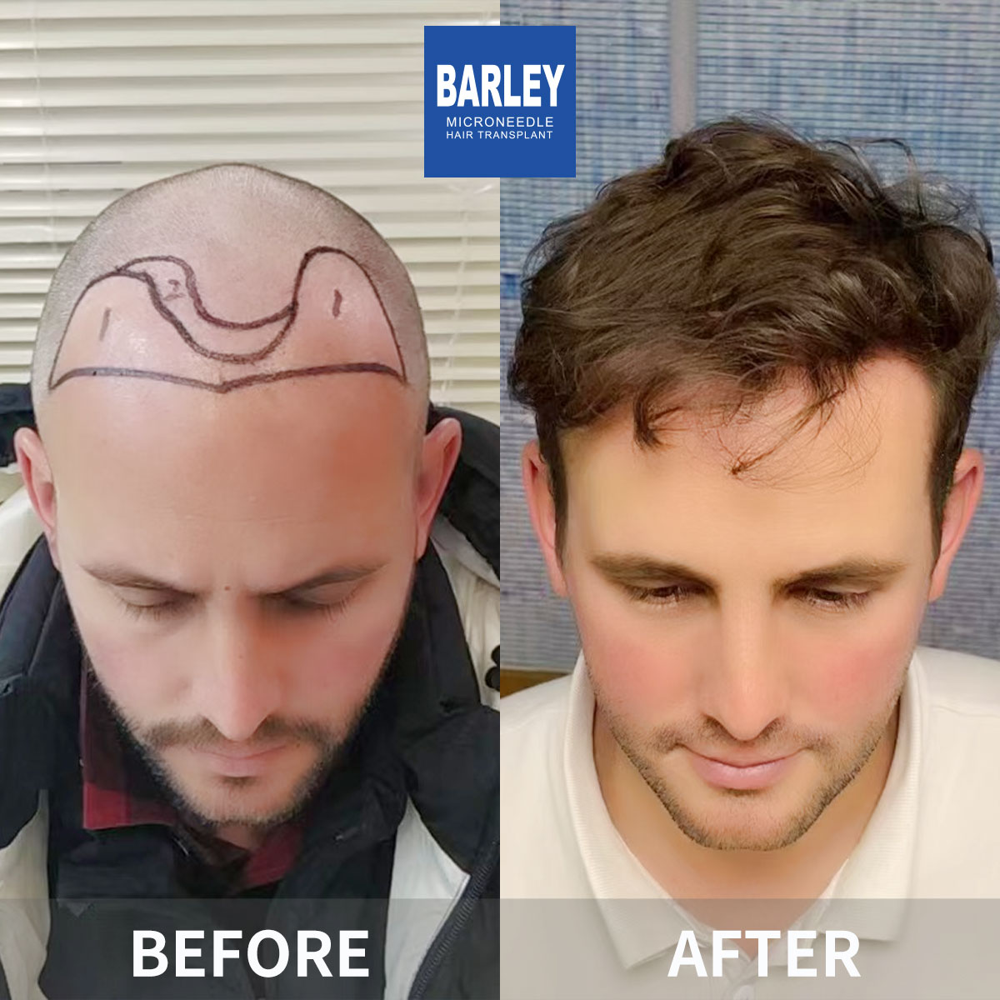
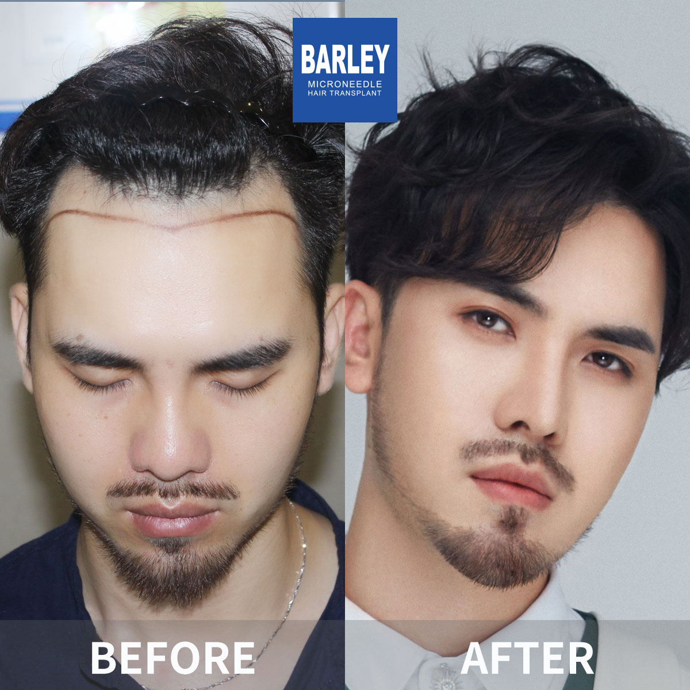
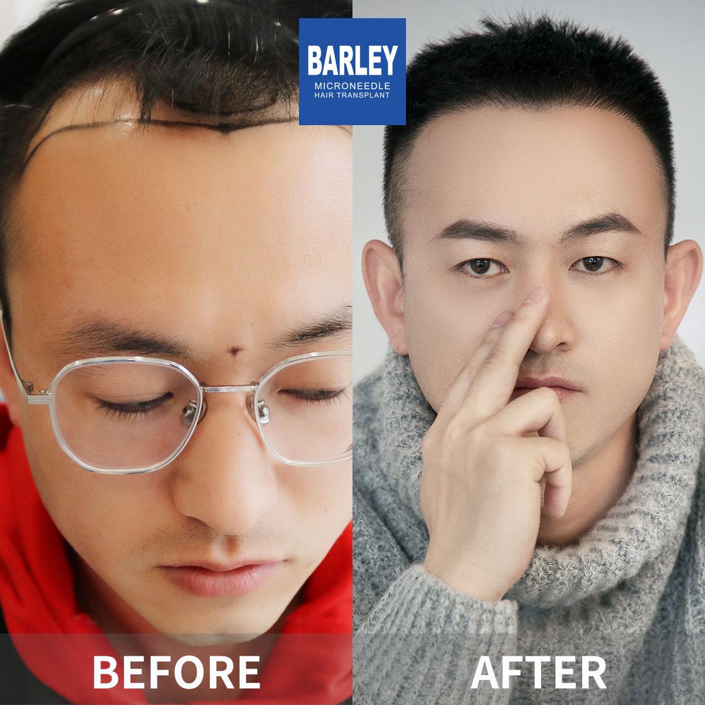
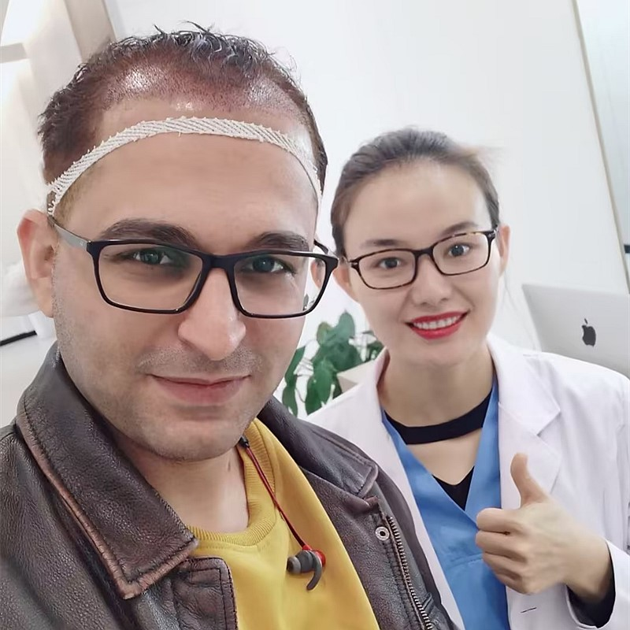

Professional guidance for maintaining and caring for your new hair

Your hair transplant results are worth protecting. At Barley, we provide comprehensive aftercare guidance and hair care products specifically formulated for transplanted hair. Proper care after your procedure helps ensure the best possible results and keeps your existing hair healthy. Our experts will guide you through every stage of your hair restoration journey.
Complete care for every stage of your hair health journey
Distinct from commercial products, designed for real results
Comprehensive guidance for optimal results
First 72 hours: gentle cleansing and care
Gradual return to normal hair care routine
Supporting initial healing and graft establishment
Maintaining and optimizing your results
Which products to use and which to avoid
Always here to answer your questions
Industry leader with proven results
Pioneer and leader in microneedle hair transplant technology since 2006
Across major cities in China, all with the same high standards
Innovative microneedle and implant pen technology for superior results
Trusted by patients from around the globe for life-changing results
Full English support for international patients throughout treatment
State-of-the-art facilities and strict safety protocols for your peace of mind
See the amazing transformations our patients have achieved






Moments captured with our satisfied patients

Posing with our medical team after successful procedure

Celebrating fantastic results with our doctors

Another satisfied patient shares their joy

Patient with our specialist before discharge

Happy patient with Dr. Chen post-treatment
Excited patient showing their new look
Hear from our satisfied patients around the world
"My hair was dry and damaged! Barley's hair care products made it so healthy and shiny! The improvement is amazing! My hair has never felt better!"
"After my transplant, Barley's post-op hair care helped my transplanted hair grow perfectly! The products are specially made for transplant care! 10/10 recommend!"
"My scalp was always itchy and irritated! Barley's scalp treatments fixed it completely! My scalp feels so healthy now! The products work wonders!"
"I searched Google for the best post-transplant hair care! Barley's products are the best! My transplanted hair grew perfectly and is so healthy!"
"My hair was brittle and would break easily! Barley's strengthening products made it so much stronger! My hair is healthier than ever!"
"I had tried so much dandruff that wouldn't go away! Barley's scalp care cleared it up completely! My scalp feels fresh and healthy now!"
Experience our modern and comfortable facilities

Our state-of-the-art facility

Relax in our premium lounge
Sterile and advanced

Private and professional

Comfortable post-op space

Welcoming entrance
Find answers to common questions about hair transplantation
Contact us for a free consultation
15810155700
+86 15810155700
hairtransplant@qq.com